The Enablers

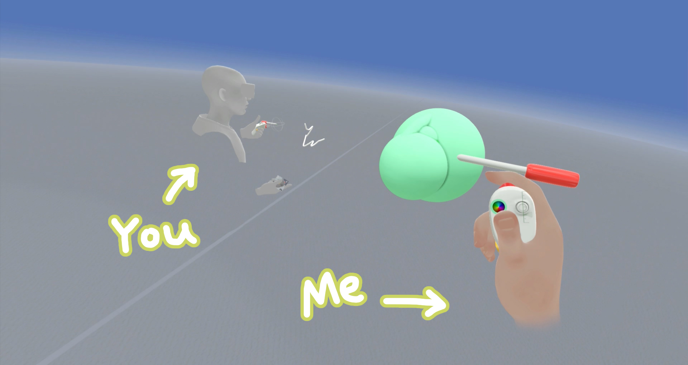

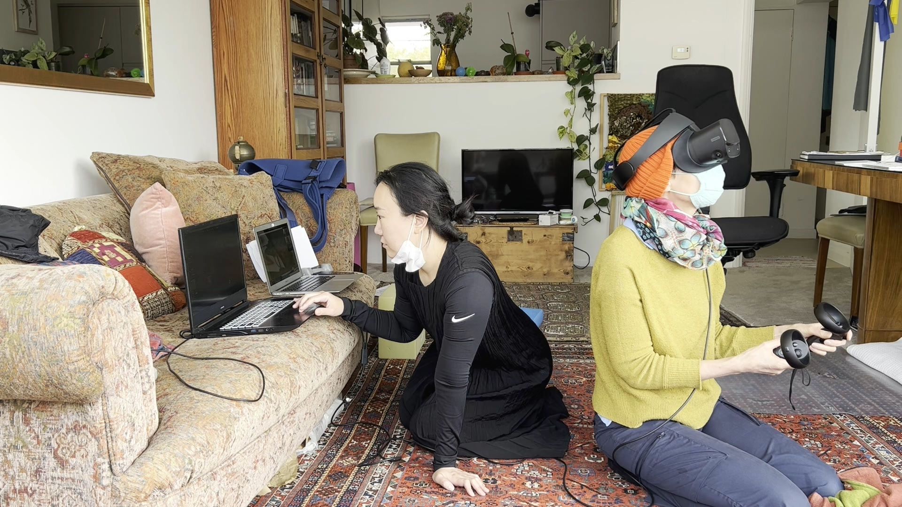
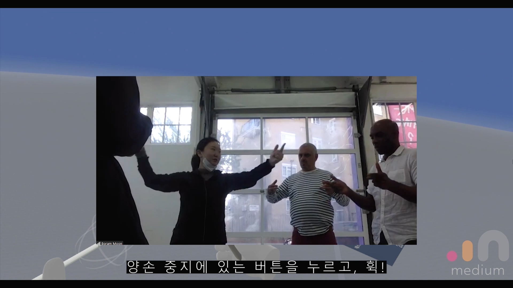
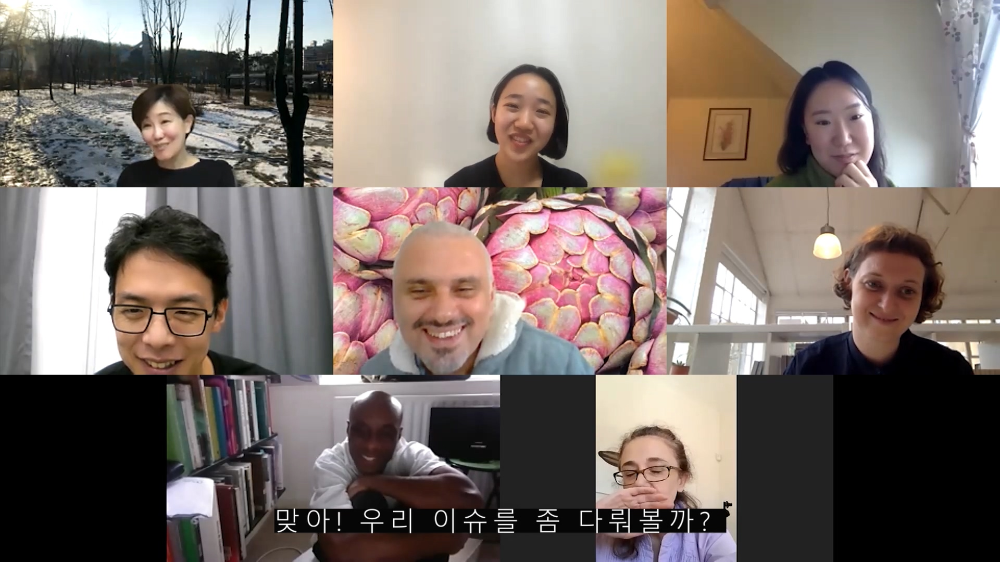
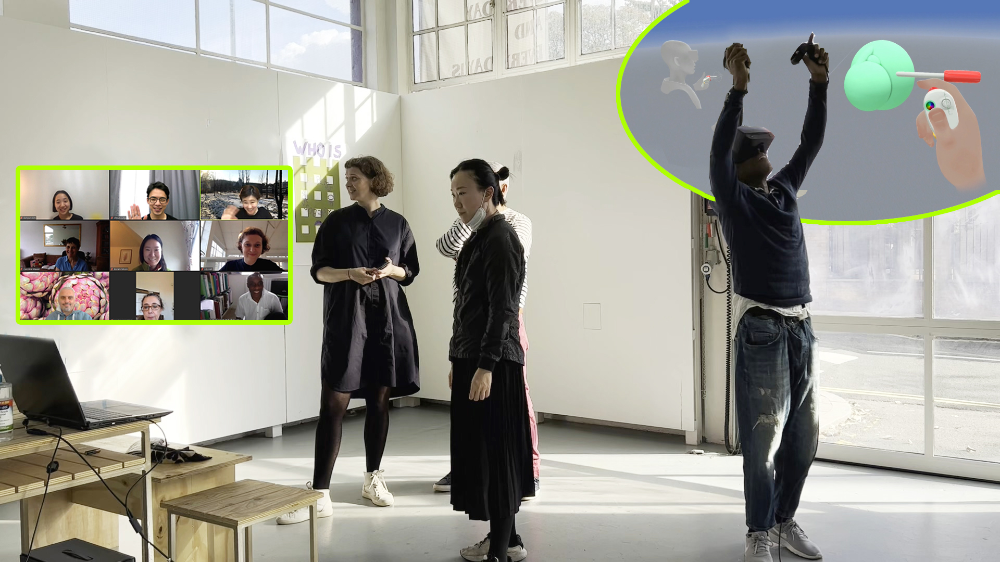
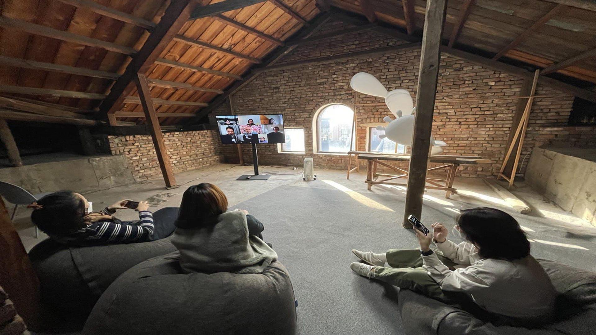
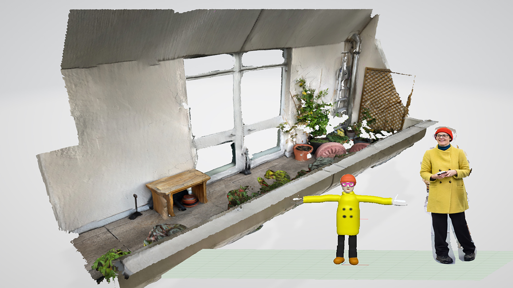
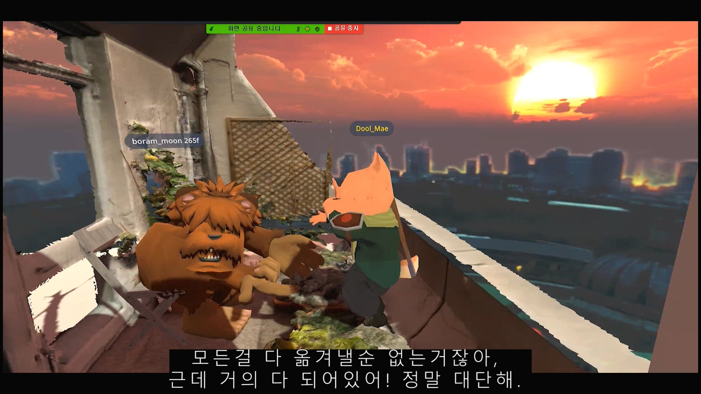
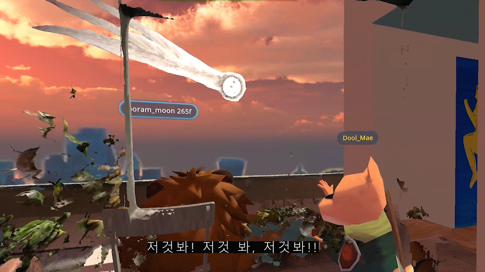
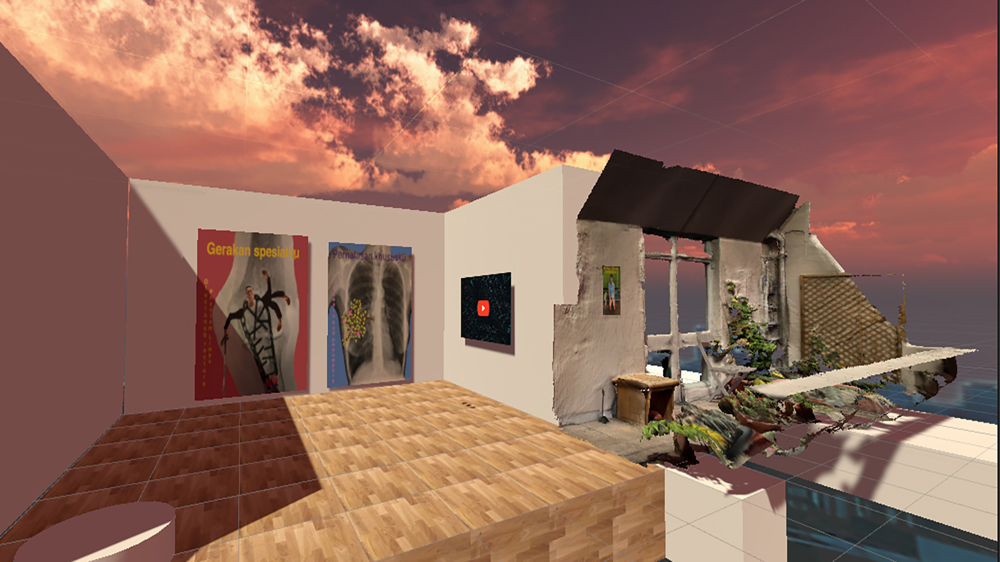
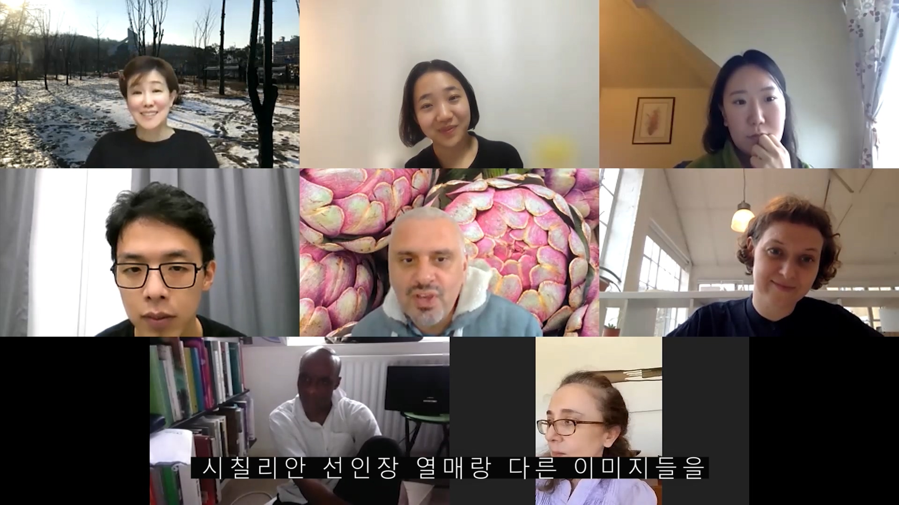
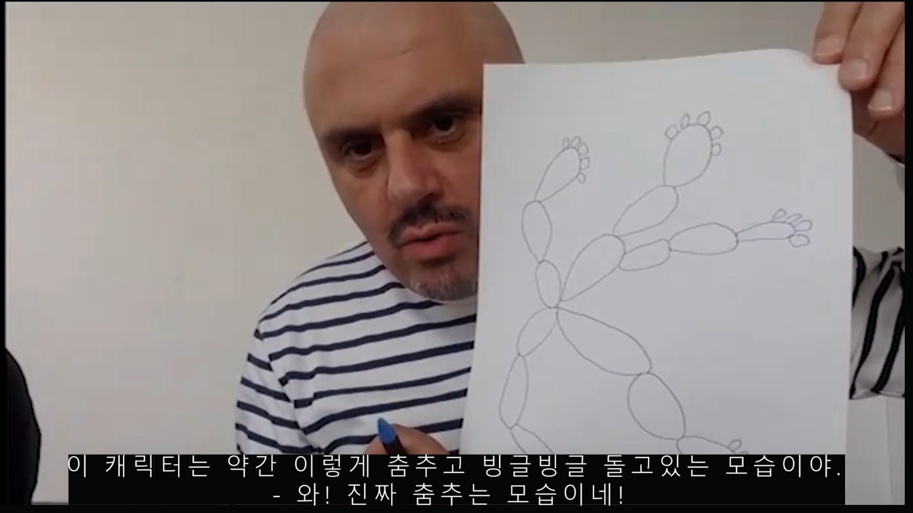
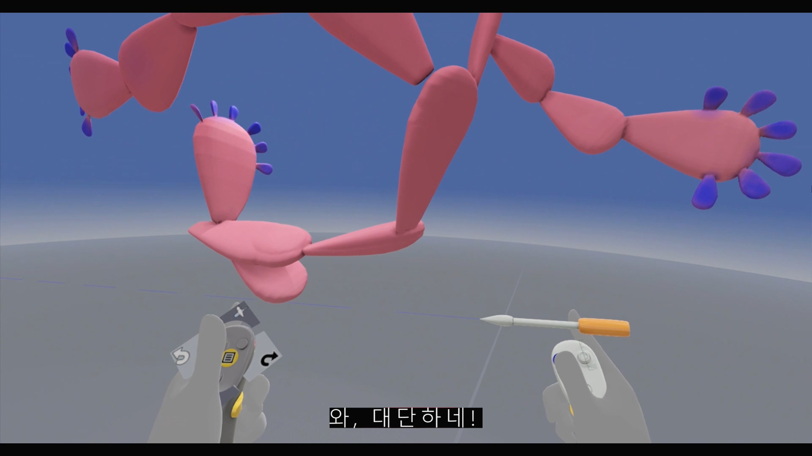
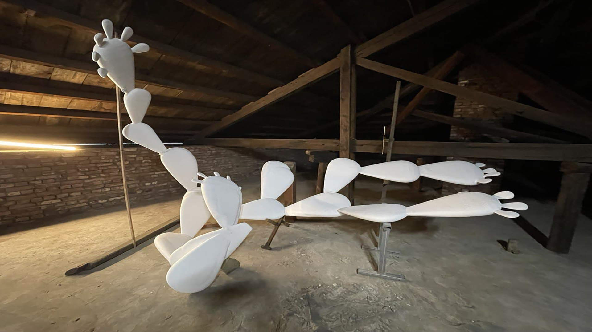
The Enablers 프로젝트는 시각예술의 생태계를 이루는 자원과 사람들을 개별적으로 호명하여 이야기로 남기는 창의적인 기록 활동이다.
see more +
The Enablers는 지난 6년간 이주요(Jewyo Rhii)가 조직했던 2개의 대표적 협업을 연결하고 위의 미술 기관들과 함께 논의된 이슈를 쟁점화하는 프로젝트이다. 이주요(Jewyo Rhii)가 그간 전시와 워크숍, 아카이빙 프로젝트를 통해 만나고 함께 일했던 사람들을 다시 연결하고, 그 장소를 재방문한다.
전통적으로 아티스트는 자신의 예술정신을 예술작품으로 구현하여 세상에 펼쳤다. 하지만 그 옛날부터 지금까지 예술 정신을 무형의 시간과 관계성 속에서 구체화하려는 아티스트들이 있었다. 찰스에셔(Charles Esche)는 최근 인터뷰에서 이들을 autonomy artist와 engaged artist로 호명하였다. (2020년 러브유어디포(Love Your Depot)와의 인터뷰). 말 그대로 engaged artist -‘개입하고 참여하는 작가’는 작업실 안에 머물지 않고 가까운 이웃을 만나러 나간다. 시간을 들여 이들과 특유의 관계를 맺으면서 더 확장된 이웃을 만나게 되고, 이를 통해 기존의 인식과 사회 제도를 바꿀 권한을 얻는다. political artist(사회 정치 참여형 아티스트) 와 구별하여 부른 그 이름의 수행적 정신성은 다양한 예술기관에서도 발견된다. 지난 6여년간 이주요와 함께 전시, 워크숍, 세미나 등의 다양한 협업을 진행해 온 로커스플러스(Locus+)와 더쇼룸(The Showroom) 은 자신들이 기관의 미션으로 삼고 수행해 온 세계관과 이주요의 최근 작업이 그 내용과 결을 같이 한다는 공동의 의견을 가지고 2021년 The Enablers 에 이어 2022년 The Enablers _Extented 기획하고 제안했다.
2021년에는 협업자들과의 워크숍을 통해 팬데믹 이후의 변화와 서로의 삶을 들여다보고 새로운 연결점을 만들었다. 과거에 이루었던 성취로 남아있는 레거시(legacy)를 현재에 사용할 수 있는 자료로 적극적으로 변환하는 이 프로젝트는 온라인 컨퍼런스와 인터뷰, 오프라인 워크숍과 퍼포먼스 공연 등을 통해 펼쳐졌다.
2022년에는 작가 이주요가 협업해 온 많은 그룹과 기관들을 재방문하면서 시각미술이 제안하는 광범위한 활동 반경과 확장된 역할, 기존 제도의 현실, 오랜 기간 전시와 출판, 교육, 실험적 프로젝트를 실현해 온 매우 다른 개성의 개별자들의 케이스를 추적하고 기록한다. 작가는 협업자들을 다시 찾아 새로운 접촉면을 만드는 창의적인 활동과 다양한 기록의 방식을 통해 급변하는 세계의 현재와 미래를 연결할 고리를 만드는 시도를 계속해 간다.